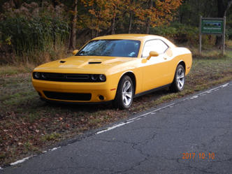

I thought that Georgia had a small number of Covered Bridges, but New Jersey has only one left! I figured I'd better go see in as soon as I got out to Princeton, NJ. I was glad I did!
As the plaque shows, Green Sergeant's Bridge was originally constructed back in 1872 and then had some restoration efforts done in 1961.
While that restoration effort including a conventional under-structure, much of the bones were salvaged and reintegrated into the rebuild.
I was able to get some photos from down at river level, too.
And, of course, I took a little movie driving through it as I love to do!! And the ride I had was also a blast!!!
I really do enjoy checking out these Covered Bridges and in a couple of weeks I'll be in Pittsburgh and I'm hoping I'll be able to see a few of the bridges in that neck of the woods, too.